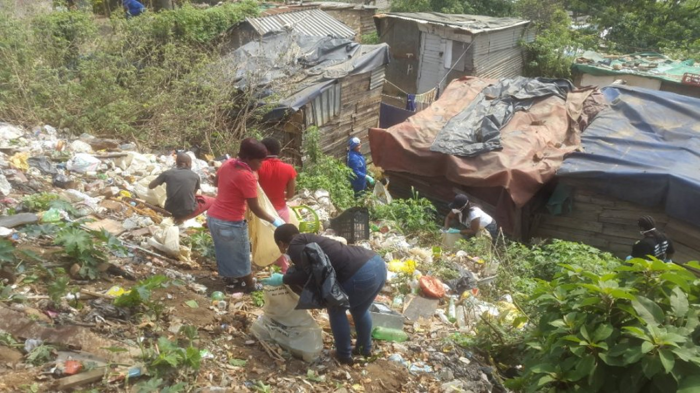

The Question: Did opening up the country open it up for everyone?
Goods · Capital · Norms
Short answer: not enough, and the rest of this essay shows why.
After 1994, did South Africa integrate into the global economy faster
than it created broad domestic opportunity, driving aggregate growth
that ultimately left the majority behind?
The RDP (1994)
promised redistribution and a more active state; by 1996 policy had shifted to
GEAR:
tighter budgets, lower trade barriers, and inflation targets.
The first Johannesburg Stock Exchange building, 1893. South Africa was tied to global finance long before 1994. Source
One city, two worlds. The same national averages hide a gap you can see from the street.
Inner city
Johannesburg CBD: where the growth story is most visible. SourceThe Constitutional Court in Johannesburg: the institutions the new economy was built on. Source
Outer city
Gugulethu: the township behind the unemployment rate. Source

Cato Crest: the settlement edge the growth never reached. Source
You can see openness in trade flows before you feel it in paychecks:
trade as a share of the economy explodes while income per person lags behind, all while unemployment remains painfully high.
How to read
Income per person and trade/GDP are set so 1990 = 100 (with macro lines back to 1960); the vertical axis uses a log scale so large swings in trade do not hide slower moves in income.
Caution
In these national data, higher trade moves alongside higher income per person, higher unemployment, and a higher top-income share. That pattern is real, but it does not prove trade caused any of them.
Technical note
A formal “long-run link” test between log income per person and trade/GDP does not find a stable long-run pairing here (p ≈ 0.48 for Engle–Granger).
Source
World Development Indicators; trade-policy context in Sources.
Indexed national indicators, 1990 = 100 (log scale)
Income per person and trade/GDP from 1960, all indexed to 100 in 1990.
Unemployment (ILO-style measure)
High, persistent unemployment is the reason higher average income does not translate into jobs for everyone.
Manufacturing and other tradable sectors shrank as openness rose; services did not absorb most displaced workers.
Manufacturing, % of GDP
–
→
–
World Bank WDI
Manufacturing, % of employed
–
→
–
OHS / LFS / QLFS
Tradable sectors, % of employed
–
→
–
Agriculture + mining + manufacturing
Trade exposure, sector by sector
When openness rises, the sectors competing most directly with imports get
squeezed first. South African manufacturing lost roughly a third of its
GDP share between 1990 and 2024. Tradable sectors shed nearly twelve
percentage points of employment share between 1999 and 2025.
How to read
The big line chart shows the share of employed adults working in tradable sectors (agriculture + mining + manufacturing) vs the rest. The smaller chart traces manufacturing's value-added share of GDP from the WDI.
Method
Employment shares are weighted from Stats SA worker microdata: OHS 1999, LFS 2000–2007, QLFS 2008–2025. Year values average all available waves. Value-added shares come from the World Bank's WDI series (NV.IND.MANF.ZS).
Caution
Co-movement is not causation. The cleanest causal evidence remains
Erten–Leight–Tregenna's
district-level analysis; this is the macro sector pattern it implies.
Tradable vs non-tradable employment share, 1999–2025
Each year is a weighted average across Stats SA labor-survey waves. Tradable = agriculture + mining + manufacturing.
Manufacturing's slice of GDP and employment
Manufacturing VA share of GDP from 1960 (WDI); employment share from 1999 (LFS/QLFS).
Why the sector cut is the sharper lens
Erten, Leight and Tregenna (2019) compare districts that were
more exposed to tariff cuts with districts that were less exposed.
The more-exposed places saw weaker employment and formal-sector outcomes, with
the heaviest costs falling on Black workers and women. The aggregate sector pattern
here mirrors that story. Manufacturing, the most trade-exposed sector, lost
ground in both output and jobs as openness rose. Services did not absorb the
displaced workforce, which helps explain why national unemployment never fell back to the
pre-1994 range.
Read together, this section answers a sharper version of the essay's core
question. Integration succeeded for capital flows and headline trade volumes, but
it hollowed out the sectors that historically employed the broadest base
of workers.
The core tension shows up in the inequality data.
After 1994, openness did not come with a clearly fairer split of income.
From 1994 on, the top tenth’s income share rose by
roughly 18 percentage points. The bottom half’s share
fell by about a third. Wealth is sharper still: the top 10% hold roughly
85% of household wealth.
For cause and effect, the essay leans on
Erten–Leight–Tregenna (2019).
Districts more exposed to tariff cuts saw weaker jobs and wages, especially for Black workers and women.
Pieter and Sipho are composite characters—not real people or survey respondents—built from
apartheid spatial law, manufacturing decline, WID inequality shares, and district-level tariff exposure
(Erten–Leight–Tregenna),
then turned into five decision beats (1994 → 2020).
Each choice nudges hidden scores for both characters; endings fall into bands from
“falling behind” to “pulling ahead.” With four options per beat, there are 1,024 paths—yet Pieter lands secure ~88% of the
time and Sipho only ~22%, because they start at different scores (capital vs. a
trade-exposed wage), not because the menu differs. After each choice, a
~X% of South Africans could tag appears—estimated feasibility (QLFS, FinScope, stokvel,
grant, migration proxies), not real survey choices.
A plain-English summary first; the full regression battery (hundreds of tests with diagnostics) is tucked away below for readers who want every estimate.
Summary
The project ran hundreds of regression specifications on the macro panel. After strict
Benjamini–Hochberg corrections, two conclusions still hold:
The move toward an open economy lines up with the decline of trade-exposed sectors.
Manufacturing employment share and tradable employment share both fall robustly as
trade openness rises (HAC t ≈ −2.5 and −3.8 over 26 years).
Trade openness also tracks the rise of the top 1%'s income share. That is the one
inequality-and-trade link the multiple-testing adjustments cannot dismiss.
On the other side of the ledger, the Chow test does not find a clean structural break
at the 1996 GEAR pivot, and trade does not robustly explain unemployment levels on its
own.
None of these single-country regressions are causal proof. For that, the essay leans on
Erten–Leight–Tregenna's
district-level evidence. Even so, they show which patterns are sturdy enough to take seriously.
Open the Full Regression Battery
Tests run–
Passed basic 5% cutoff–
Still passes Bonferroni–
Still passes BH (strictest here)–
Tier
BHBH · strict many-test adjustmentBonfBonferroni · very conservative adjustmentRawraw · basic cutoff onlyn/snot sig. at 5%
p
p < 0.05 · p ≥ 0.05
Diag
DW near 2 is healthy · BP, LB > 0.05 suggests fewer technical red flags · click a row for estimates
Glossary
Main regression table
Click a row to expand estimates and technical checks. Quick guide:
DW near 2 is healthy;
BP and LB above 0.05 usually mean fewer warning lights.
Provincial narrow unemployment from 1997 - 2025 (harmonised OHS / LFS / QLFS).
Source: Stats SA QLFS.
Provincial unemployment spread over time
Each point is the gap between the highest- and lowest-unemployment province in that quarter (percentage points).
Scroll slowly to advance quarters, use Play for an automatic run to the latest quarter, or drag the slider anytime. A before-and-after comparison appears when you finish once.
…
Lower %Higher %
Tip: zoom in on the map to see metropolitan unemployment (after the map loads).
First quarter vs latest quarter
Lighter color = lower unemployment, darker color = higher unemployment
StartLatest
Method
I calculated provincial rates from Stats SA microdata (narrow unemployment, survey weights),
harmonising LFS and OHS for early years and QLFS thereafter.
Official tables can differ by revision; treat long-run movement across survey redesigns as indicative.
Sources lists P0211 and related entries under Datasets.
After 1994, South Africa successfully rejoined the world economy. The unresolved
question is distribution: why those gains did not become broad employment and
shared prosperity.
Aggregate gains → uneven access
Trade rose, sanctions-era isolation ended, and average income per person
finished higher than in the early 1990s. On macro terms, integration
delivered measurable gains.
Macro progress → labor-market bottlenecks
Those gains did not diffuse widely through the labor market. Unemployment
remained structurally high, and income and wealth stayed heavily concentrated
at the top.
Correlation patterns → causal evidence
National regressions here are correlational. The sharper causal signal comes
from district-level evidence
Erten–Leight–Tregenna:
areas more exposed to tariff cuts saw weaker employment outcomes, with the
largest burdens on Black workers and women.
Past reintegration → next-phase inclusion
The lesson is not to retreat from global integration. It is to pair openness
with employment-centered industrial policy, labor-market activation, and
place-based investment where exclusion is persistent.
South Africa’s post-1994 transition solved reintegration faster than inclusion.
The country became more open and somewhat richer on average, but not broadly
secure in jobs and income. The next phase is not less integration. It is
better-governed integration so gains in trade and investment translate into mass
opportunity, not just aggregate improvement.
Provincial map (§9): Narrow unemployment by province/quarter from harmonised Stats SA LFS / OHS / QLFS microdata (my aggregates; not official published tables).
Files & coverage
Stats SA and DataFirst (UCT) survey microdata. Some pre-2008 waves omitted where labor fields are not comparable.
OHS (1994–1999): Microdata via DataFirst (UCT). Follow DataFirst/CC terms; cite Statistics South Africa as producer.
Fair to say: After 1994, South Africa opened more while unemployment stayed high and income and wealth remained concentrated. That is a descriptive read of the national charts and cited surveys.
Fair to say: On this site’s macro panel, two associations survive Benjamini–Hochberg correction: trade openness with declining tradable-sector employment shares and with rising top-1% income share (see §8).
Fair to say: Provincial unemployment is spatially uneven. My map (§9) uses aggregates I built from harmonised Stats SA microdata; treat long runs across survey redesigns as indicative.
Fair to say: On my map, the provincial spread (gap between lowest- and highest-unemployment provinces) widened by roughly 8 percentage points from 1997 Q4 to 2025 Q4 while national unemployment also rose—descriptive spatial divergence that complements district-level studies cited below, not proof of causation on its own.
Not fair to claim: That national regressions or these charts alone prove trade caused inequality, sector decline, or unemployment. Stronger causal claims rely on outside studies cited in Sources (e.g. district tariff exposure).
Not fair to claim: That GEAR (1996) marks a clean structural break in these national series (the Chow test here does not support that), or that trade openness by itself explains unemployment levels in the macro panel.
Not fair to claim: Perfect comparability across inequality databases (different methods and end years) or across every map quarter (some waves lack comparable labor fields).
Not fair to claim: That Two Lives (Pieter and Sipho) are real individuals or direct microdata extracts. They are composite illustrations built from the essay’s evidence and history.
Limits of the evidence (most important first)
Few years per series. At most about 35 annual points.
Statistical precision is limited even when p-values look tiny.
Year follows year. Many rows fail the Durbin–Watson check
(below 1.5), meaning errors cluster over time. Adjusted standard errors help,
but filtering those rows is wise when you want cleaner reads.
Many tests, many chances. This page estimates
hundreds
of equations. Bonferroni and BH adjustments punish that; surviving BH is the
credibility bar used here.
Correlation is not policy proof. For stronger causal claims,
this essay leans on outside work: sanctions synthetic controls, district labor
markets after tariff cuts, and wealth distribution accounting (Chatterjee et al., 2022).
Survey gaps. WIID-based Gini fades after 2017; WDI Gini is thin.
Treat cross-series comparisons as suggestive, not exact.
How to cite this page
APA: Hallur, S. (2026). The Price of Integration: South Africa after 1994. Economics 30 final project. Retrieved from https://econ30finalproject.vercel.app
BibTeX:
@misc{hallur2026integration,
author = {Hallur, Sunmit},
title = {The Price of Integration: South Africa after 1994},
year = {2026},
note = {Economics 30 final project},
url = {https://econ30finalproject.vercel.app}
}


{kind=link}
_The_Exchange.jpg){kind=link}